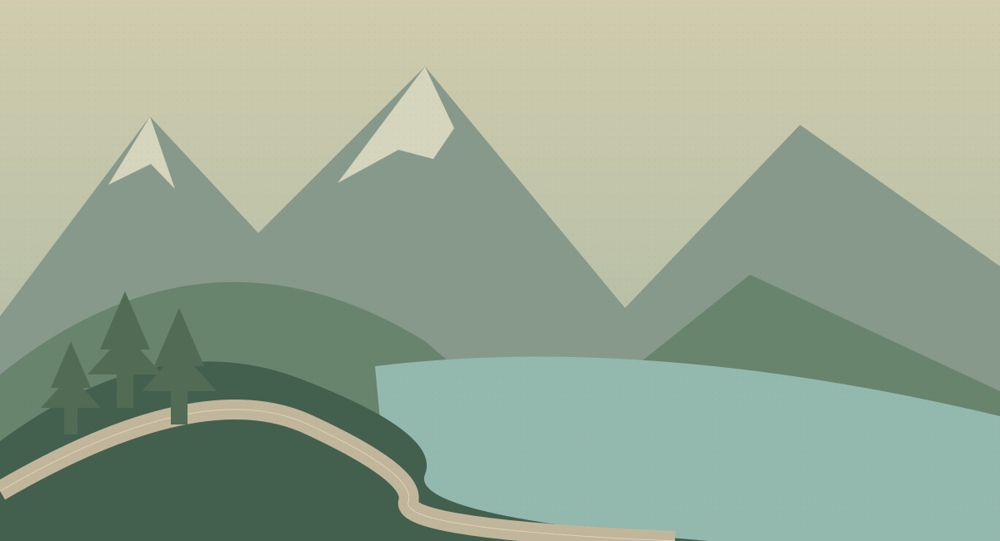

Fewer places,
longer stays.
I spend a month in each place, learn where the bread is good, and write it down. No itineraries, no top ten lists, and nothing sponsored. Just what it is actually like to be somewhere for a while.
An illustrated journal concept. Ines and the diary entries are fictional.

Four weeks in
the Julian Alps.
I went for the lake and stayed for the valley behind it. Notes on a slower month, the rhythm of the bus stop, and why I'd choose October over July.
Recent dispatches.
YOUR READING LIST ↓Set a story aside.
No saved dispatches yet. Open a story and save it for later.
Saved only in this page's memory. Refreshing starts a new notebook.
Where I've
been.
The fictional author's travel notebook,
not a live location feed.
Slovenia2026
Portugal2026
Japan2025
Morocco2025
Scotland2025
Italy2024
Georgia2024
Albania2024
Mexico2023
Norway2023
A month is the
shortest useful trip.
A week tells you what a place looks like. A month tells you what it is like to live there badly, which is more interesting. You find out which shop is open on Sunday, how the buses actually behave, and what everyone complains about.
The good part is always the second week, when you stop taking photographs of everything.

30.5450° N, 9.7100° W · February

40.8244° N, 140.7400° E · April

38.4436° N, 7.3797° W · May

56.1880° N, 2.8170° W · August

41.7151° N, 44.8271° E · October
Eight things,
nothing else.
A fictional packing list.
No affiliate links or product sponsorship.
A 38-litre backpack
If it doesn't fit, it doesn't come. Carry-on only, every time.
One film camera
Thirty-six frames a week makes you think before you press it.
Merino everything
Three shirts, worn in rotation, washed in sinks.
A paper notebook
Phones die. Notes apps are for lists, not sentences.
An e-reader
Loaded before I leave, because rural wifi is a rumour.
A two-port USB-C adapter
The single most useful object I own.
Trail runners
They handle a mountain and a dinner. Boots handle one.
A packable rain shell
Bought in Scotland, for obvious reasons.
9.1900° E / 2023
A person,
not a publication.
I left a design job in Milan in 2023 and have been moving every month or two since. I pay for my own trips. If something was bad, I'll say so.
Fictional author bio. All art is original vector illustration rather than travel photography.
Instagram ↗ Email Ines ↗